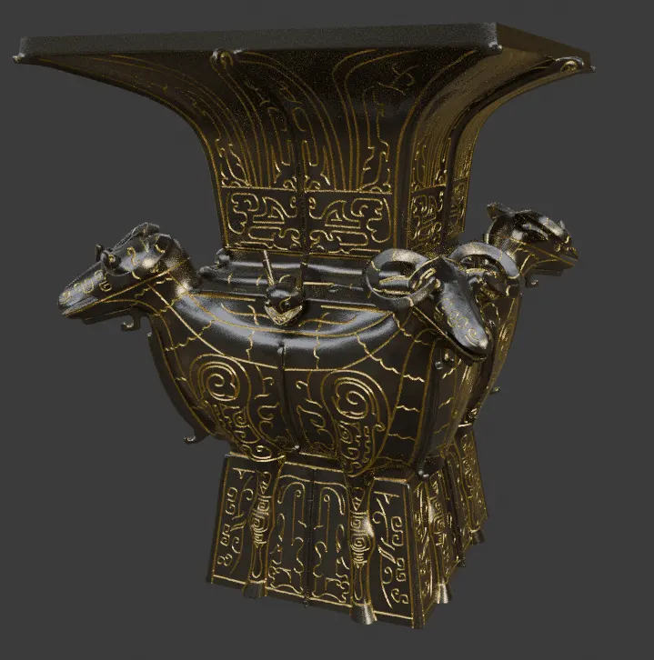
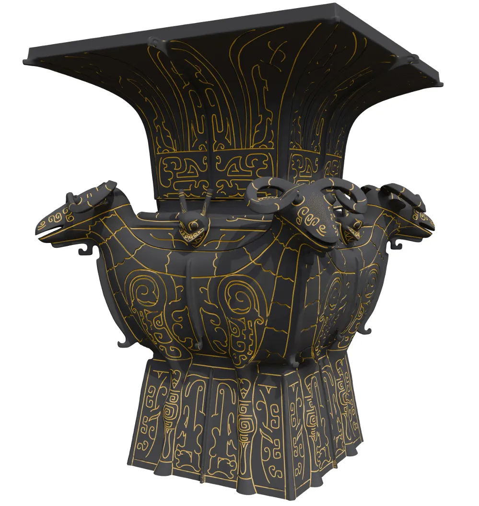
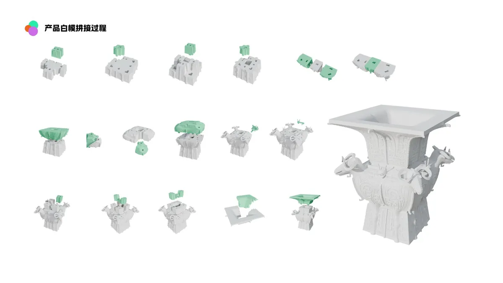
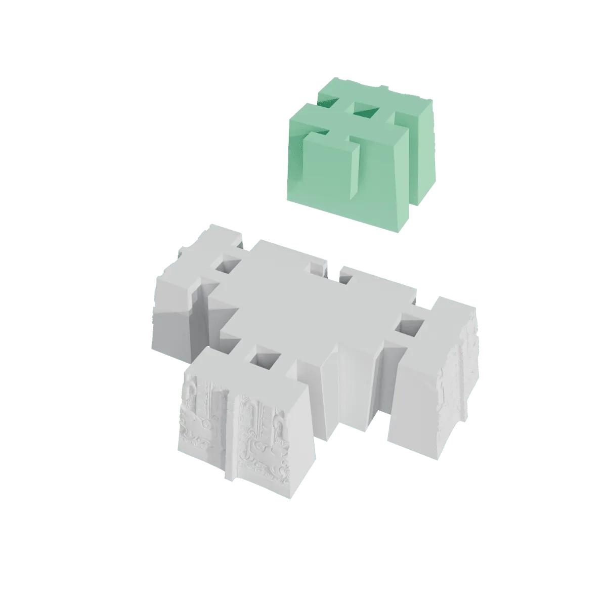
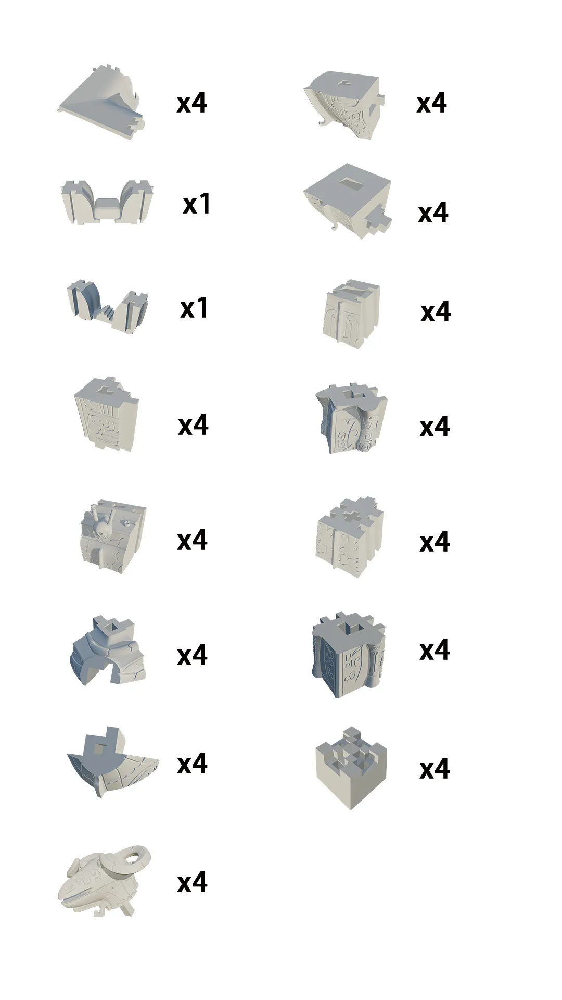
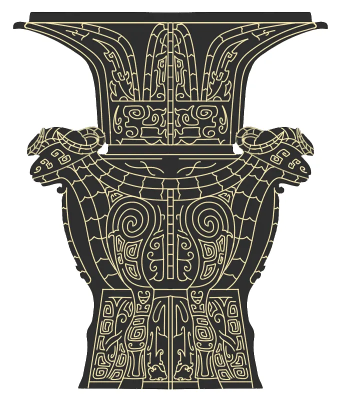

Case Study
Product Development / Cultural Artifact Transformation
Mass Produced
The Siyang Fangzun (Four-Ram Square Zun) is one of China's most iconic bronze artifacts, dating back to the Shang Dynasty. This project transforms the national treasure into a manufacturable consumer product — bridging 3,000 years of cultural heritage with modern production capabilities.
The goal was not merely to replicate, but to re-engineer: creating a product that honors the original form while being feasible for batch production using contemporary manufacturing methods.

The original Fangzun features extremely complex ornamental geometry — four ram heads with intricate surface patterns that push the limits of traditional bronze casting. Reproducing it as a consumer product required solving three fundamental problems:
Complex ornamental geometry — the fine surface patterns exceed standard casting resolution. Difficult manufacturing — single-piece casting would require impractical mold complexity and high defect rates. Structural integrity — thin walls and undercuts create casting risks that must be eliminated.

Rather than reproducing the artifact as a single piece, I rebuilt the entire topology from scan data, decomposed the structure into modular components, and optimized each part for manufacturability.
The re-design eliminates all undercuts, unifies draft angles, and introduces a mortise-tenon inspired assembly system that requires no adhesives. The result is 16 individually castable components that assemble into the complete product.



The production strategy evaluates multiple casting methods to balance quality, cost, and scalability:
Investment casting (lost-wax process) is used for high-detail components with fine surface patterns, achieving the ornamental quality expected of a cultural product. Sand casting is evaluated for larger structural components where surface detail is secondary to dimensional accuracy. The post-casting assembly system enables batch production with per-component quality control before final assembly.
A manufacturable cultural product with optimized structure and production feasibility. The re-design demonstrates that traditional artifacts can be transformed into scalable consumer products through systematic engineering and design thinking — preserving cultural significance while achieving modern manufacturing standards.